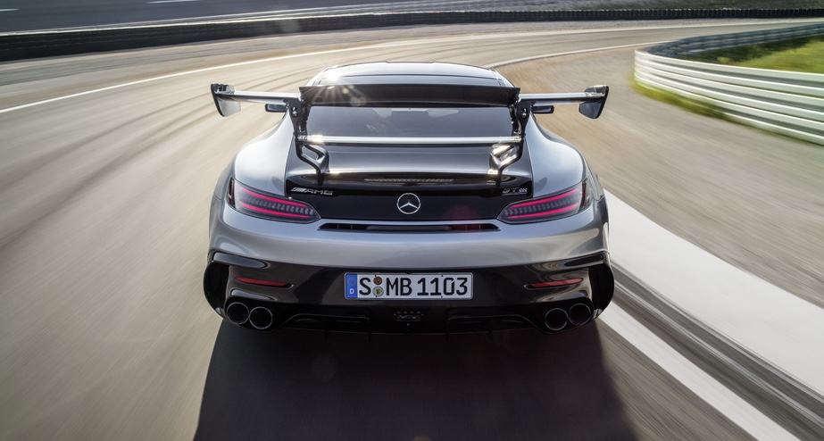

The most powerful AMG V8 series engine of all time, the most elaborate aerodynamics, the most intelligent material mix, the most expressive design, the most distinctive driving dynamics: For the new Mercedes-AMG GT Black Series, Affalterbach's engineers have raised the bar in the art of vehicle design.
This new super sports car perfectly embodies the brand's rich tradition in motorsport, as well as its expertise in developing complete vehicles which impress in every respect. The result is an awe-inspiring vehicle with 720 hp from a Handcrafted AMG V8 engine with a flat-plane crankshaft, combined with active aerodynamics and a design stemming directly from the current AMG GT3 racing car.

Although the new GT Black Series engine is based on the AMG 4.0-liter V8 biturbo with dry sump lubrication, it has been given the new internal code of M178 LS2, due to its numerous modifications. It achieves 720 hp at 6,700-6,900 rpm and delivers a maximum torque of 590 lb-ft at 2,000-6,000 rpm. New camshafts and exhaust manifolds are adapted to the new firing order and further improve the gas cycle.
Both twin-scroll exhaust turbochargers are mounted in anti-friction bearings, as in the top-of-the-range four-door AMG GT Coupe, which optimizes their throttle response even further. However, in the GT Black Series, the turbochargers have been given a larger compressor wheel, meaning that both can deliver a total of 24.6 psi. By way of comparison: The figure is 19.6 psi for the AMG GT R. 7,000 rpm is not critical as a continuous speed, so the redline instead tops out at 7,200 rpm. The larger intercoolers guarantee they always keep the charge-air temperature within the best possible range. The unique aspects of the new engine are also reflected in the distinctive engine badge, which is rendered in black.